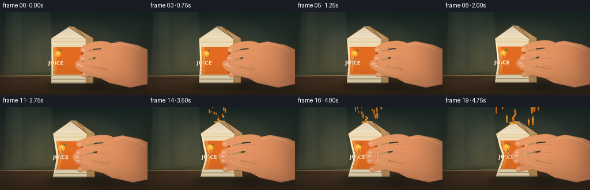
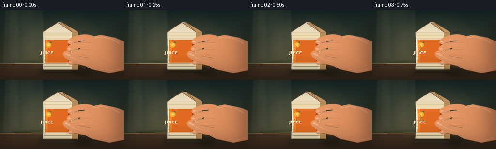

CODING AGENTS AS PIXEL WORLD MODELS
traex/DeepSeek-V4.1-Flash · mechanics_0019
点击播放 · 原生 RGB 像素
此结果可播放，但该运行尚未通过最终提交审核。页面展示不代表评测通过。
逐轮保存的候选
回放视频、检查图与代码变化。
每份候选均可单独播放。实际图片检查记录在下方工具轨迹中。
候选 01播放与检查图
点击播放 · 原生 RGB 像素


展开代码变化
--- 上一保存版本
+++ 本次保存版本
@@ -0,0 +1,616 @@
+from pathlib import Path
+import math
+
+import numpy as np
+from PIL import Image, ImageDraw, ImageFilter, ImageFont
+
+import artifact_io
+
+
+WIDTH, HEIGHT = 256, 144
+FRAMES = 20
+FPS = 4.0
+SS = 4
+CW, CH = WIDTH * SS, HEIGHT * SS
+
+
+def clamp(value, lo=0.0, hi=1.0):
+ return max(lo, min(hi, value))
+
+
+def smoothstep(edge0, edge1, value):
+ t = clamp((value - edge0) / (edge1 - edge0))
+ return t * t * (3.0 - 2.0 * t)
+
+
+def mix(a, b, t):
+ return a + (b - a) * t
+
+
+def color(value):
+ value = value.lstrip("#")
+ return tuple(int(value[i:i + 2], 16) for i in (0, 2, 4))
+
+
+def rgba(value, alpha=255):
+ return color(value) + (int(alpha),)
+
+
+def scaled_point(point):
+ return (round(point[0] * SS), round(point[1] * SS))
+
+
+def scaled_points(points):
+ return [scaled_point(point) for point in points]
+
+
+def polygon(draw, points, fill):
+ draw.polygon(scaled_points(points), fill=fill)
+
+
+def line(draw, points, fill, width=1, joint="curve"):
+ draw.line(
+ scaled_points(points),
+ fill=fill,
+ width=max(1, round(width * SS)),
+ joint=joint,
+ )
+
+
+def ellipse(draw, box, fill):
+ draw.ellipse(tuple(round(value * SS) for value in box), fill=fill)
+
+
+def font(size, bold=True):
+ candidates = [
+ "/usr/share/fonts/truetype/dejavu/DejaVuSans-Bold.ttf" if bold
+ else "/usr/share/fonts/truetype/dejavu/DejaVuSans.ttf",
+ "/usr/share/fonts/truetype/liberation2/LiberationSans-Bold.ttf" if bold
+ else "/usr/share/fonts/truetype/liberation2/LiberationSans-Regular.ttf",
+ ]
+ for candidate in candidates:
+ if Path(candidate).is_file():
+ return ImageFont.truetype(candidate, max(8, round(size * SS)))
+ return ImageFont.load_default()
+
+
+def cubic_bezier(p0, p1, p2, p3, count=36):
+ points = []
+ for index in range(count):
+ t = index / (count - 1)
+ omt = 1.0 - t
+ x = (
+ omt ** 3 * p0[0]
+ + 3 * omt * omt * t * p1[0]
+ + 3 * omt * t * t * p2[0]
+ + t ** 3 * p3[0]
+ )
+ y = (
+ omt ** 3 * p0[1]
+ + 3 * omt * omt * t * p1[1]
+ + 3 * omt * t * t * p2[1]
+ + t ** 3 * p3[1]
+ )
+ points.append((x, y))
+ return points
+
+
+def ribbon(draw, centerline, start_radius, end_radius, fill, outline=None, outline_width=1.0):
+ left = []
+ right = []
+ count = len(centerline)
+ for index, point in enumerate(centerline):
+ t = index / (count - 1)
+ before = centerline[max(0, index - 1)]
+ after = centerline[min(count - 1, index + 1)]
+ dx, dy = after[0] - before[0], after[1] - before[1]
+ length = max(1e-5, math.hypot(dx, dy))
+ nx, ny = -dy / length, dx / length
+ radius = mix(start_radius, end_radius, t)
+ radius *= 0.92 + 0.08 * math.sin(math.pi * t)
+ left.append((point[0] + nx * radius, point[1] + ny * radius))
+ right.append((point[0] - nx * radius, point[1] - ny * radius))
+ shape = left + list(reversed(right))
+ if outline is not None:
+ expanded_left = []
+ expanded_right = []
+ for index, point in enumerate(centerline):
+ t = index / (count - 1)
+ before = centerline[max(0, index - 1)]
+ after = centerline[min(count - 1, index + 1)]
+ dx, dy = after[0] - before[0], after[1] - before[1]
+ length = max(1e-5, math.hypot(dx, dy))
+ nx, ny = -dy / length, dx / length
+ radius = mix(start_radius, end_radius, t) + outline_width
+ expanded_left.append((point[0] + nx * radius, point[1] + ny * radius))
+ expanded_right.append((point[0] - nx * radius, point[1] - ny * radius))
+ polygon(draw, expanded_left + list(reversed(expanded_right)), outline)
+ polygon(draw, shape, fill)
+ for point, radius in ((centerline[0], start_radius), (centerline[-1], end_radius)):
+ ellipse(
+ draw,
+ (point[0] - radius, point[1] - radius, point[0] + radius, point[1] + radius),
+ fill,
+ )
+ return shape
+
+
+def gradient_image(width, height, top, bottom):
+ y = np.linspace(0.0, 1.0, height, dtype=np.float32)[:, None]
+ top_array = np.array(top, dtype=np.float32)[None, :]
+ bottom_array = np.array(bottom, dtype=np.float32)[None, :]
+ rows = top_array * (1.0 - y) + bottom_array * y
+ array = np.repeat(rows[:, None, :], width, axis=1)
+ return Image.fromarray(np.clip(array, 0, 255).astype(np.uint8), "RGB").convert("RGBA")
+
+
+def add_soft_shadow(base, box, blur, fill):
+ layer = Image.new("RGBA", base.size, (0, 0, 0, 0))
+ draw = ImageDraw.Draw(layer)
+ ellipse(draw, box, fill)
+ layer = layer.filter(ImageFilter.GaussianBlur(blur * SS))
+ base.alpha_composite(layer)
+
+
+def draw_background(pressure):
+ image = gradient_image(CW, CH, (25, 42, 43), (72, 69, 48))
+ draw = ImageDraw.Draw(image, "RGBA")
+
+ # A soft, out-of-focus kitchen window gives the scene a warm light source.
+ window = Image.new("RGBA", image.size, (0, 0, 0, 0))
+ window_draw = ImageDraw.Draw(window, "RGBA")
+ polygon(window_draw, [(10, -15), (89, -6), (93, 104), (5, 111)], rgba("#d8d49b", 20))
+ polygon(window_draw, [(20, -8), (37, -6), (39, 99), (19, 102)], rgba("#ffe6a3", 26))
+ polygon(window_draw, [(51, -4), (70, -2), (72, 99), (50, 101)], rgba("#ffe6a3", 22))
+ line(window_draw, [(46, -5), (47, 102)], rgba("#172629", 70), 2.0)
+ line(window_draw, [(15, 50), (91, 46)], rgba("#172629", 55), 1.4)
+ window = window.filter(ImageFilter.GaussianBlur(2.0 * SS))
+ image.alpha_composite(window)
+
+ # Countertop with a slightly blurred front edge.
+ counter = gradient_image(CW, CH, (117, 89, 58), (58, 42, 29))
+ counter_mask = Image.new("L", image.size, 0)
+ mask_draw = ImageDraw.Draw(counter_mask)
+ mask_draw.rectangle((0, round(110 * SS), CW, CH), fill=255)
+ image.paste(counter, (0, 0), counter_mask)
+ draw = ImageDraw.Draw(image, "RGBA")
+ line(draw, [(0, 111), (256, 109)], rgba("#d0b477", 90), 1.3)
+ line(draw, [(0, 116), (256, 114)], rgba("#3e2c20", 95), 1.0)
+ for index in range(9):
+ y = 121 + index * 3.0
+ line(draw, [(0, y), (256, y - 1.4)], rgba("#9b7249", 22), 0.45)
+
+ # Warm pool of light behind the subject.
+ glow = Image.new("RGBA", image.size, (0, 0, 0, 0))
+ glow_draw = ImageDraw.Draw(glow, "RGBA")
+ for radius, alpha in ((92, 12), (67, 16), (43, 18)):
+ ellipse(
+ glow_draw,
+ (132 - radius, 73 - radius * 0.72, 132 + radius, 73 + radius * 0.72),
+ rgba("#ffd478", alpha),
+ )
+ glow = glow.filter(ImageFilter.GaussianBlur(10 * SS))
+ image.alpha_composite(glow)
+
+ # Counter shadow anchors the carton and hand.
+ add_soft_shadow(image, (80, 118, 190, 135), 5.0, rgba("#101817", 120))
+ add_soft_shadow(image, (147, 117, 256, 138), 7.0, rgba("#101817", 100))
+ return image
+
+
+def carton_geometry(pressure):
+ top = mix(45.0, 49.5, pressure)
+ bottom = mix(123.0, 120.5, pressure)
+ left_base = 89.0
+ right_base = 148.5
+ side_base = 161.5
+ rows = 34
+ left_edge = []
+ right_edge = []
+ side_edge = []
+
+ for index in range(rows):
+ u = index / (rows - 1)
+ y = mix(top, bottom, u)
+ belly = math.sin(math.pi * u) ** 1.25
+ thumb_press = math.exp(-((u - 0.61) / 0.16) ** 2)
+ crease = pressure * pressure * 0.55 * math.sin(u * math.pi * 5.0)
+ left = left_base + pressure * (2.2 + 8.6 * belly + 2.0 * thumb_press) + crease
+ right = right_base - pressure * (1.5 + 6.8 * belly)
+ side = side_base - pressure * (0.8 + 3.6 * belly)
+ left_edge.append((left, y))
+ right_edge.append((right, y))
+ side_edge.append((side, y))
+
+ ridge_x = mix(119.0, 121.0, pressure)
+ ridge_y = mix(25.5, 30.5, smoothstep(0.42, 1.0, pressure))
+ # The gable top swells just before the seam gives way.
+ ridge_y -= 1.5 * smoothstep(0.55, 0.84, pressure)
+ return {
+ "top": top,
+ "bottom": bottom,
+ "left_edge": left_edge,
+ "right_edge": right_edge,
+ "side_edge": side_edge,
+ "ridge": (ridge_x, ridge_y),
+ }
+
+
+def edge_at(edge, y):
+ first_y = edge[0][1]
+ last_y = edge[-1][1]
+ t = clamp((y - first_y) / max(1e-5, last_y - first_y)) * (len(edge) - 1)
+ index = min(len(edge) - 2, int(t))
+ frac = t - index
+ return mix(edge[index][0], edge[index + 1][0], frac)
+
+
+def draw_carton(image, pressure, burst):
+ geom = carton_geometry(pressure)
+ draw = ImageDraw.Draw(image, "RGBA")
+ left_edge = geom["left_edge"]
+ right_edge = geom["right_edge"]
+ side_edge = geom["side_edge"]
+ top = geom["top"]
+
+ side_face = list(right_edge) + list(reversed(side_edge))
+ polygon(draw, side_face, rgba("#b88d58", 255))
+
+ front_face = list(left_edge) + list(reversed(right_edge))
+ polygon(draw, front_face, rgba("#f0dfb9", 255))
+
+ # Front paper gradient and side shading.
+ for index in range(13):
+ u = index / 12.0
+ y = mix(top, geom["bottom"], u)
+ left = edge_at(left_edge, y)
+ right = edge_at(right_edge, y)
+ shade = int(238 - 12 * u + 4 * math.sin(u * math.pi))
+ line(draw, [(left + 0.6, y), (right - 0.3, y)], (shade, int(shade * 0.91), int(shade * 0.73), 70), 1.7)
+ for index in range(8):
+ u = index / 7.0
+ y = mix(top, geom["bottom"], u)
+ right = edge_at(right_edge, y)
+ side = edge_at(side_edge, y)
+ tone = int(174 - 20 * u)
+ line(draw, [(right, y), (side, y)], (tone, int(tone * 0.76), int(tone * 0.50), 150), 1.8)
+
+ # Gable roof: front panel, darker side panel, and folded seam.
+ ridge = geom["ridge"]
+ left_top = (edge_at(left_edge, top), top)
+ right_top = (edge_at(right_edge, top), top)
+ side_top = (edge_at(side_edge, top), top)
+ polygon(draw, [left_top, right_top, ridge], rgba("#f5e6c7", 255))
+ polygon(draw, [right_top, side_top, (ridge[0] + 10.5, ridge[1] + 0.4), ridge], rgba("#c39a65", 255))
+ line(draw, [left_top, ridge, right_top], rgba("#8d653f", 185), 0.9)
+ line(draw, [right_top, (ridge[0] + 10.5, ridge[1] + 0.4), side_top], rgba("#805b3b", 165), 0.7)
+ line(draw, [(ridge[0] + 0.3, ridge[1] - 0.4), (ridge[0] + 10.5, ridge[1] + 0.4)], rgba("#f5ddb1", 170), 1.0)
+
+ # The split seam opens when pressure reaches its peak.
+ if burst > 0.02:
+ seam_width = 1.0 + 2.4 * burst
+ seam = [
+ (ridge[0] - 7.0, ridge[1] + 1.2),
+ (ridge[0] + 4.5, ridge[1] + 0.3),
+ (ridge[0] + 4.5, ridge[1] + 0.3 + seam_width),
+ (ridge[0] - 7.0, ridge[1] + 1.2 + seam_width),
+ ]
+ polygon(draw, seam, rgba("#f39a1f", 255))
+ line(draw, seam[:2], rgba("#ffe6a0", 230), 0.8)
+
+ # Orange label follows the deformed carton surface.
+ label_top, label_bottom = 61.0, 108.5
+ label_rows = []
+ for index in range(18):
+ u = index / 17.0
+ y = mix(label_top, label_bottom, u)
+ left = edge_at(left_edge, y) + 3.4
+ right = edge_at(right_edge, y) - 2.2
+ label_rows.append((left, right, y))
+ label_shape = [(left, y) for left, _, y in label_rows] + [(right, y) for _, right, y in reversed(label_rows)]
+ polygon(draw, label_shape, rgba("#e26b22", 255))
+ polygon(
+ draw,
+ [(left + 1.1, y) for left, _, y in label_rows]
+ + [(left + 5.5, y) for left, _, y in reversed(label_rows)],
+ rgba("#f58b30", 105),
+ )
+ polygon(
+ draw,
+ [(right - 5.4, y) for _, right, y in label_rows]
+ + [(right - 0.8, y) for _, right, y in reversed(label_rows)],
+ rgba("#a94216", 105),
+ )
+
+ # Simple fruit mark and wordmark.
+ center_x = edge_at(left_edge, 72.0) + 11.0
+ ellipse(draw, (center_x - 5.3, 67.0, center_x + 5.3, 77.6), rgba("#ffad2c", 255))
+ ellipse(draw, (center_x - 2.5, 69.2, center_x + 2.2, 74.1), rgba("#ffd76d", 170))
+ polygon(draw, [(center_x + 1.1, 67.3), (center_x + 5.5, 64.8), (center_x + 6.8, 68.5)], rgba("#53783c", 255))
+ text_font = font(9.0, bold=True)
+ text = "JUICE"
+ text_x = edge_at(left_edge, 92.5) + 8.0
+ text_layer = Image.new("RGBA", image.size, (0, 0, 0, 0))
+ text_draw = ImageDraw.Draw(text_layer)
+ text_draw.text(
+ scaled_point((text_x, 88.2)),
+ text,
+ font=text_font,
+ fill=rgba("#fff2d0", 240),
+ anchor="mm",
+ stroke_width=1,
+ stroke_fill=rgba("#a64317", 145),
+ )
+ image.alpha_composite(text_layer)
+ draw = ImageDraw.Draw(image, "RGBA")
+
+ # Vertical fold and a narrow side label.
+ side_x = edge_at(right_edge, 92.0)
+ line(draw, [(side_x, 61.5), (side_x - pressure * 1.4, 108.0)], rgba("#9e6d42", 95), 0.6)
+ line(draw, [(side_x + 3.2, 61.5), (side_x + 1.7, 108.0)], rgba("#f2c783", 65), 0.7)
+
+ # Glossy rim light on the left edge.
+ left_highlight = [(x + 1.4, y) for x, y in left_edge[2:-2]]
+ line(draw, left_highlight, rgba("#fff3ce", 145), 0.8)
+
+ # Crumple creases grow out from the squeezed waist.
+ if pressure > 0.08:
+ strength = smoothstep(0.08, 0.95, pressure)
+ left_mid = edge_at(left_edge, 85.0)
+ right_mid = edge_at(right_edge, 88.0)
+ creases = [
+ [(left_mid + 3.0, 78.0), (left_mid + 8.0, 84.0), (left_mid + 5.2, 91.0)],
+ [(left_mid + 7.5, 72.5), (left_mid + 11.0, 79.0), (left_mid + 9.0, 84.0)],
+ [(right_mid - 7.5, 74.0), (right_mid - 11.0, 80.5), (right_mid - 9.2, 87.0)],
+ [(right_mid - 6.0, 92.0), (right_mid - 10.0, 97.5), (right_mid - 8.5, 103.0)],
+ ]
+ for crease_index, points in enumerate(creases):
+ line(draw, points, rgba("#8c552f", int(42 + 75 * strength)), 0.55 + 0.35 * strength)
+ highlight = [(x + 0.7, y - 0.4) for x, y in points]
+ line(draw, highlight, rgba("#fff0c2", int(20 + 35 * strength)), 0.45)
+
+ # Sharp little folds at the deepest squeeze.
+ if pressure > 0.58:
+ fold_alpha = int(90 * smoothstep(0.58, 0.95, pressure))
+ fold_y = 88.5
+ fold_left = edge_at(left_edge, fold_y)
+ fold_right = edge_at(right_edge, fold_y)
+ line(draw, [(fold_left + 4, fold_y), (fold_left + 10, fold_y - 3), (fold_left + 15, fold_y + 1)],
+ rgba("#7c4528", fold_alpha), 0.55)
+ line(draw, [(fold_right - 14, fold_y - 2), (fold_right - 8, fold_y + 2), (fold_right - 3, fold_y)],
+ rgba("#8a4d2b", fold_alpha), 0.55)
+
+ return geom
+
+
+def draw_hand(image, pressure, burst):
+ # Hand layer is assembled as a mask so all fingers share a continuous skin gradient.
+ layer = Image.new("RGBA", image.size, (0, 0, 0, 0))
+ draw = ImageDraw.Draw(layer, "RGBA")
+ finger_tip = mix(143.5, 127.0, smoothstep(0.02, 1.0, pressure))
+ curl = smoothstep(0.0, 1.0, pressure)
+ finger_data = [
+ ((188.0, 59.0), (177.0, 54.0), (154.0, 57.0), (finger_tip + 1.0, 65.5), 6.2, 5.0),
+ ((190.0, 73.0), (177.0, 68.0), (153.0, 72.5), (finger_tip - 0.5, 80.2), 6.3, 5.1),
+ ((191.0, 87.5), (178.0, 83.0), (154.0, 88.0), (finger_tip - 1.5, 94.0), 6.2, 5.0),
+ ((191.0, 101.5), (180.0, 98.0), (158.0, 101.5), (finger_tip + 2.0, 108.5), 5.7, 4.6),
+ ]
+
+ for index, (p0, p1, p2, p3, start_radius, end_radius) in enumerate(finger_data):
+ # Fingers bow outward as they tighten around the carton.
+ p1 = (p1[0] - 0.8 * curl, p1[1] - 0.8 * curl)
+ p2 = (p2[0] - 2.0 * curl, p2[1] + (0.5 + index * 0.3) * curl)
+ p3 = (p3[0], p3[1] + 0.5 * curl)
+ centerline = cubic_bezier(p0, p1, p2, p3, 42)
+ ribbon(draw, centerline, start_radius, end_radius, rgba("#d88a61", 255),
+ outline=rgba("#6d392b", 175), outline_width=0.72)
+
+ palm_points = [
+ (183.0, 56.0),
+ (208.0, 51.0),
+ (238.0, 57.0),
+ (256.0, 65.0),
+ (256.0, 125.0),
+ (226.0, 131.0),
+ (190.0, 123.0),
+ (167.0, 111.0),
+ (161.0, 92.0),
+ (169.0, 70.0),
+ ]
+ polygon(draw, palm_points, rgba("#d98c62", 255))
+ line(draw, palm_points[1:7], rgba("#6e3a2c", 155), 0.9)
+
+ # Thumb comes forward diagonally across the lower carton face.
+ thumb_tip = (mix(137.0, 125.5, smoothstep(0.03, 1.0, pressure)), mix(91.0, 86.0, curl))
+ thumb_center = cubic_bezier(
+ (185.0, 108.0),
+ (170.0, 106.0),
+ (149.0, 102.0),
+ thumb_tip,
+ 44,
+ )
+ ribbon(draw, thumb_center, 8.1, 7.0, rgba("#df966b", 255),
+ outline=rgba("#6b382b", 180), outline_width=0.8)
+
+ # Compose skin gradient through the hand silhouette.
+ mask = layer.getchannel("A")
+ yy, xx = np.mgrid[0:CH, 0:CW].astype(np.float32)
+ xnorm = np.clip((xx / CW - 0.60) / 0.44, 0.0, 1.0)
+ ynorm = np.clip((yy / CH - 0.32) / 0.65, 0.0, 1.0)
+ light = np.clip(1.0 - 0.36 * xnorm - 0.20 * ynorm, 0.0, 1.0)
+ warm = np.clip(0.95 - 0.20 * xnorm, 0.0, 1.0)
+ skin = np.zeros((CH, CW, 4), dtype=np.uint8)
+ skin[..., 0] = np.clip(184 + 50 * light, 0, 255)
+ skin[..., 1] = np.clip(102 + 47 * light + 6 * warm, 0, 255)
+ skin[..., 2] = np.clip(69 + 35 * light, 0, 255)
+ skin[..., 3] = np.asarray(mask, dtype=np.uint8)
+ skin_layer = Image.fromarray(skin, "RGBA")
+
+ # Preserve a few line details from the construction layer above the gradient.
+ details = Image.new("RGBA", image.size, (0, 0, 0, 0))
+ detail_draw = ImageDraw.Draw(details, "RGBA")
+ for index, (p0, p1, p2, p3, start_radius, end_radius) in enumerate(finger_data):
+ p1 = (p1[0] - 0.8 * curl, p1[1] - 0.8 * curl)
+ p2 = (p2[0] - 2.0 * curl, p2[1] + (0.5 + index * 0.3) * curl)
+ p3 = (p3[0], p3[1] + 0.5 * curl)
+ centerline = cubic_bezier(p0, p1, p2, p3, 42)
+ tip = centerline[-1]
+ # Nails sit on the visible tips.
+ nail_w = 3.3 if index < 3 else 3.0
+ ellipse(
+ detail_draw,
+ (tip[0] - nail_w, tip[1] - 1.8, tip[0] + nail_w, tip[1] + 1.8),
+ rgba("#efb28c", 170),
+ )
+ ellipse(
+ detail_draw,
+ (tip[0] - nail_w * 0.64, tip[1] - 1.25, tip[0] + nail_w * 0.64, tip[1] + 0.55),
+ rgba("#ffe0c2", 115),
+ )
+ line(
+ detail_draw,
+ [centerline[-7], (centerline[-6][0] + 0.3, centerline[-6][1] + 0.2)],
+ rgba("#8e4b38", 120),
+ 0.55,
+ )
+ # Knuckle crease near the base.
+ line(
+ detail_draw,
+ [(centerline[8][0] - 0.3, centerline[8][1] - 2.0), (centerline[8][0] + 1.0, centerline[8][1] + 2.0)],
+ rgba("#a95e45", 80),
+ 0.45,
+ )
+
+ thumb_tip_nail = thumb_center[-1]
+ ellipse(
+ detail_draw,
+ (thumb_tip_nail[0] - 3.6, thumb_tip_nail[1] - 2.4, thumb_tip_nail[0] + 3.6, thumb_tip_nail[1] + 2.4),
+ rgba("#f0b28b", 180),
+ )
+ ellipse(
+ detail_draw,
+ (thumb_tip_nail[0] - 2.3, thumb_tip_nail[1] - 1.5, thumb_tip_nail[0] + 2.3, thumb_tip_nail[1] + 1.0),
+ rgba("#ffe2c5", 115),
+ )
+
+ # Soft cast shadow from the hand onto the right side of the carton.
+ shadow = Image.new("RGBA", image.size, (0, 0, 0, 0))
+ shadow_draw = ImageDraw.Draw(shadow, "RGBA")
+ polygon(shadow_draw, [(165, 67), (189, 63), (191, 120), (169, 113)], rgba("#592d24", 55))
+ shadow = shadow.filter(ImageFilter.GaussianBlur(2.0 * SS))
+ image.alpha_composite(shadow)
+ image.alpha_composite(skin_layer)
+
+ # Add the edge shading/details on top.
+ edge_layer = Image.new("RGBA", image.size, (0, 0, 0, 0))
+ edge_draw = ImageDraw.Draw(edge_layer, "RGBA")
+ # Broad highlight on palm and forearm.
+ line(edge_draw, [(194, 58), (210, 55), (231, 60), (247, 69)], rgba("#f2b18a", 115), 2.2)
+ line(edge_draw, [(207, 122), (231, 126), (251, 121)], rgba("#f0a278", 75), 2.0)
+ # Finger separation shadows.
+ for y in (67.2, 81.2, 95.4):
+ line(edge_draw, [(188, y), (173, y - 0.3), (157, y + 1.5)], rgba("#7a3c2f", 70), 0.7)
+ # Thumb highlight and crease.
+ line(edge_draw, thumb_center[8:-7], rgba("#f5b48e", 90), 2.0)
+ line(edge_draw, [(174, 106), (163, 103), (154, 99)], rgba("#8f4938", 85), 0.55)
+ image.alpha_composite(details)
+ image.alpha_composite(edge_layer)
+
+ return thumb_tip
+
+
+def draw_juice_spray(image, frame_index, burst):
+ if burst <= 0.01:
+ return
+ draw = ImageDraw.Draw(image, "RGBA")
+ geom = carton_geometry(min(1.0, 0.55 + burst * 0.45))
+ ridge_x, ridge_y = geom["ridge"]
+ origin = (ridge_x + 0.5, ridge_y + 1.6)
+
+ # A compressed central jet.
+ if frame_index >= 12:
+ age = frame_index - 11.0
+ jet_height = min(31.0, 3.2 + age * 2.3) * burst
+ jet_points = [
+ origin,
+ (origin[0] - 1.0 - age * 0.12, origin[1] - jet_height * 0.34),
+ (origin[0] + 1.2 + age * 0.18, origin[1] - jet_height * 0.68),
+ (origin[0] - 0.2 + math.sin(age) * 1.2, origin[1] - jet_height),
+ ]
+ line(draw, jet_points, rgba("#ef7b18", 220), 1.8 + 0.18 * age)
+ line(draw, [(x + 0.7, y - 0.2) for x, y in jet_points[1:]],
+ rgba("#ffd25d", 155), 0.65)
+
+ # Deterministic droplets launched from the seam.
+ rng = np.random.default_rng(19)
+ count = 16
+ for index in range(count):
+ birth = 11.5 + (index % 7) * 0.42
+ age = frame_index - birth
+ if age < 0:
+ continue
+ direction = -1.0 if index % 2 == 0 else 1.0
+ vx = direction * (2.0 + rng.random() * 4.5)
+ vy = -(5.0 + rng.random() * 7.0)
+ x = origin[0] + vx * age + math.sin(index * 2.1) * 2.2
+ y = origin[1] + vy * age + 0.75 * age * age
+ radius = 0.7 + (index % 4) * 0.28 + min(0.8, age * 0.13)
+ if x < 4 or x > 252 or y > 116:
+ continue
+ stretch = min(3.4, 1.0 + age * 0.45)
+ ellipse(draw, (x - radius * 0.7, y - radius * stretch, x + radius * 0.7, y + radius * stretch),
+ rgba("#f47e16", 220))
+ ellipse(draw, (x - radius * 0.24, y - radius * stretch * 0.55, x + radius * 0.22, y + radius * 0.1),
+ rgba("#ffe070", 150))
+
+
+def render_frame(frame_index):
+ t = frame_index / (FRAMES - 1)
+ pressure = 0.025 + 0.975 * (t ** 1.10)
+ burst = smoothstep(0.61, 0.98, pressure)
+ image = draw_background(pressure)
+ geom = draw_carton(image, pressure, burst)
+ draw_hand(image, pressure, burst)
+ draw_juice_spray(image, frame_index, burst)
+
+ # A restrained warm vignette keeps attention on the grip.
+ vignette = Image.new("RGBA", image.size, (0, 0, 0, 0))
+ vignette_draw = ImageDraw.Draw(vignette, "RGBA")
+ vignette_draw.rectangle((0, 0, CW, CH), fill=(10, 12, 10, 0))
+ for inset, alpha in ((0, 85), (10, 45), (22, 18)):
+ vignette_draw.rectangle(
+ (round(inset * SS), round(inset * SS), CW - round(inset * SS), CH - round(inset * SS)),
+ outline=(8, 10, 9, alpha),
+ width=round(24 * SS),
+ )
+ vignette = vignette.filter(ImageFilter.GaussianBlur(12 * SS))
+ image.alpha_composite(vignette)
+
+ # Very slight camera push-in, centered on the carton.
+ zoom = 1.0 + 0.035 * smoothstep(0.0, 1.0, t)
+ resampling = Image.Resampling.BICUBIC
+ if zoom > 1.0001:
+ new_w, new_h = round(CW * zoom), round(CH * zoom)
+ enlarged = image.resize((new_w, new_h), resampling)
+ center_x = round(0.49 * new_w)
+ center_y = round(0.56 * new_h)
+ left = clamp(center_x - CW // 2, 0, new_w - CW)
+ top = clamp(center_y - CH // 2, 0, new_h - CH)
+ image = enlarged.crop((left, top, left + CW, top + CH))
+
+ frame = image.convert("RGB").resize((WIDTH, HEIGHT), Image.Resampling.LANCZOS)
+ array = np.asarray(frame, dtype=np.int16)
+
+ # Tiny amount of warm highlight lift after downsampling.
+ array[..., 0] = np.clip(array[..., 0] + 1, 0, 255)
+ array[..., 2] = np.clip(array[..., 2] - 1, 0, 255)
+ return np.asarray(array, dtype=np.uint8)
+
+
+def main():
+ frames = np.stack([render_frame(index) for index in range(FRAMES)], axis=0)
+ artifact_io.save(frames, Path(__file__).resolve().parent)
+
+
+if __name__ == "__main__":
+ main()
可观测工具轨迹
实际执行的命令与返回图片。
命令 1exit 0
/bin/bash -c "pwd && rg --files -g 'prompt.txt' -g 'GENERATION_RULES.md' -g 'task_spec.json' -g '"'!node_modules'"' -g '"'!venv'"'"
命令 2exit 0
/bin/bash -c 'ls -la'
命令 3exit 0
/bin/bash -c 'cat prompt.txt'
命令 4exit 0
/bin/bash -c 'cat GENERATION_RULES.md'
命令 5exit 0
/bin/bash -c 'cat task_spec.json'
命令 6exit 0
/bin/bash -c "sed -n '1,240p' artifact_io.py"
命令 7exit 0
/bin/bash -c "sed -n '1,260p' player_template.html"
命令 8exit 0
/bin/bash -c 'python generate.py'
保存候选 1 份；完成命令 8 次；可验证图片返回 0 张。原始 API 响应与完整日志保留在本地。